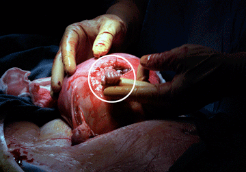

|
God only trusted fangs and claws to those creatures He felt
It is an indisputable fact of life that the things we learn early on in any discipline, impact us the most
in subsequent practice or application of that discipline. What we learn, for example, in elementary
school, and especially in those early years, carries over well into high school and college. Our values,
study habits, presuppositions and much, much more, are established largely during the first grades.
This is because the lessons learned and habits acquired in those first years of study in any new subject
somehow imprint on the individual's mind. The impressions made on that "clean blank
slate"1 are pretty much permanent,
and the things first written there, regardless of how often the slate is erased and written over, those things
stay with us (sometimes haunting us) for years.
Elbows are more powerful, heel-palms are as effective as the best punches (and much safer for your
hands), kicking extends one's striking range (and it's a lot flashier to boot
),
but punching remains a fundamental skill and a basis for most techniques. Still, as simple as punching may seem
— everyone knows how, right? — teaching it involves three distinct and critical components:
Forming The Fist A Fist For Striking or Punching? In its most natural formation, a fist is made simply by curling or rolling your fingers in, closing your hand, and allowing your thumb to fold over your index finger thereby locking the whole package together. Such a fist is suitable for striking (making contact with the meat at the bottom of the fist — primarily the Abductor Digiti Quinti muscle), for we've all seen even little children 4 striking others with such fists. However, such a fist may not be the best for punching (making contact with the boney metacarpophalangeal joints). Doubtless, the natural clenched fist is suitable for striking as it works very well as a traditional hammerfist. However, it must be pointed out that the hammerfist does not strike with the knuckles. Striking with the knuckles requires changes in the fist's basic shape as well as in its alignment with regard to the intended target. Since fangs and claws were entrusted only to those creatures that could responsibly handle them, and with the exception of the human brain (which far too many do not exercise sufficiently to avoid fights), what other natural, purely physical tools have humans for personal protection? The reality is that all we have physically are feeble, blunt-ended limbs suitable only for striking other humans. Before smashing immediately into that, we really need to understand something about what usually precedes punching:
Namely, grabbing. This is important because in a fight, grabbing inevitably leads to striking. Let's take
a quick look at how grabbing and punching can be very smartly connected and combined, and just how that impacts forming
the fist.
Mention grabbing and most immediately think of our assailants grabbing us. However, in
this discussion we need to consider how we should grab our assailants or anything
else for that matter.
 Samuel Armus grasping Dr. Joseph Bruner's finger. (Copyrighted photo used with permission of the photographer, Michael Clancy.) That same natural reflex (even in an unborn child) is reinforced throughout our lives from finger grasping, to bottle holding, to eating, and even to holding your daily newspaper. Want proof? Ask yourself, what will you most likely do if someone pulls on the newspaper you are holding? Answer: Like most of us, you will try to hang on to it! Punching In General
Recognizing full well that no grip is unbreakable, one can quickly release any thumbless, resisted or failed grasp, and roll right into a strike. You continue striking until another grasp opportunity presents itself and then, if you wish to, you grab again. Until then, you continue striking, which, by the way, "may" include punching.7 Although many practice punching by working a traditional heavy bag, double-end balls, and speed bags regularly,
experience shows that there are much better weapons for empty-hand striking than the fists. For example,
slapping can be surprisingly effective, and elbow strikes are, well, not so surprisingly, extremely effective.
We will leave discussion of those weapons for another day, but for now, just recognize that "punching" is not the
only striking method available to you. That said, a smartly delivered punch from a well-formed fist can be a
very effective blow for an otherwise unarmed human. Since delivery, hand position, fist shape, and striking
point all need to be understood when punching, let's look briefly at each.
So what is the key to velocity? First, never pull back or chamber your fist before striking. This should be obvious, but the "chambering" practice still plagues most Asian martial arts practitioners, running counter to the ancient Chinese monk and martial arts master who said, "If you want to get from point A to point B really fast, don't start by backing up!" Chambering likely does not change the impact of the blow (i.e. the terminal velocity is equivalent). However, the time from the decision to punch to the landing of the actual punch is slower for the chambered blow. This is because the chambering or backing up to the chamber position, regardless of how quickly it is done, results in a longer elapsed time for the blow — not to mention the telegraph you send to your opponent informing him that the blow is coming. But let us set this issue aside for the moment and return to it later. The second key to gaining velocity in punching is relaxation. Put simply, your hand should be open and remain
so until milliseconds before striking your target. A tightly clenched fist may be strong (it works in arm
wrestling) but, compared to a relaxed hand, it is very slow. The relaxed hand that clenches up only
at the instant of impact is much faster. Beginners often use tightly clenched fists because they lack the
necessary coordination to use a relaxed hand, but proper training should quickly overcome that. Try it
yourself. Compare, for example, a traditional strong and tightly-clenched backfist blow to the head, with a
relaxed, open-handed eye-flick. You will quickly see that a relaxed hand is much, much faster than a clenched
one. That's Delivery. Let's move now to Hand Position by comparing
horizontal and vertical punches.
A great advantage of the vertical punch is that it keeps your elbow down. This gives you a much stronger punch because, through the entire line of the blow, your fist is aligned with your elbow, shoulder, and hip. Horizontal punches simply do not line up that way. Moreover, combining vertical punch delivery with good structural body alignment (fist, elbow, and shoulder, with hip, knee, and foot — what we label as six points of alignment) results in really effective power delivery. Beyond sound structural body alignment, the punch's power potential can be further enhanced by adding
directional harmony to his blow. ("Directional harmony" is a Parker Kenpo term describing your
body moving in "harmony" with some other action — in this case a punch). The directional harmony here
is simultaneously shuffling toward your assailant, coordinated with hip rotation, and coupled with the synchronized
extension of your fist to your target. Proper breathing (exhaling through the blow) is also necessary but really
outside the scope of this discussion. (For more discussion on that element check out Martial Arts America:
A Western Approach To Eastern Arts, Chapter 10.)
To visualize the hollow fist, begin with an open hand, then fold your fingers flat against your palm, as if trying to answer the Zen koan: "What's the sound of one hand clapping?" The fingers lay flat against the palm, and your thumb (tucked in) rides the top of your fist. Whether vertical, horizontal, or uppercut, this is the fist many well-trained fighters use for all their punching.
Striking Point Striking point is also important when punching. Striking "point" (singular) is emphasized here because the blow with this fist is made primarily using the center knuckle 12 — the metacarpophalangeal (MCP) joint knuckle of the "Middle" or "Saturn" finger. If you must lean on another knuckle, then you use the index finger knuckle, but that is strictly secondary and not what you primarily want — ideally you want the center knuckle making the bulk of the contact on the target. Some folks might ask, "Won't you break your fingers striking like that ... I mean, won't your fingers take the impact along with your knuckle?" Actually, no. What happens is that as the fingers are pressed, they almost flatten, and in the process, the knuckle is thrust deeper into the target. To visualize this, have one of your body-builder friends stand before you, squeezing his pectoral muscles together. Make a variety of standard fists and punch him in the sternum. (For this experiment you don't have to strike his sternum hard; you're just trying to see the kind of penetration each punch provides.)13 What you will find is that when the center knuckle of the vertical fist (a right fist in this example) makes good contact with the sternum on even a well-muscled chest, the opponent's right pectoral muscle makes contact with your fingers. Instead of causing your fist to rotate counter-clockwise (on a horizontal plane), as it would if your fingers were tightly rolled or tucked in, your fingers simply fold and the knuckle penetrates deeper — right into his sternum. Even though we are experimenting with a very specialized blow, it illustrates well how the fingers are not as vulnerable as some imagine. On top of this, the hollow fist actually does a better job of keeping the wrist properly aligned. Proof of that last point is easily found by doing so-called, "knuckle" push-ups. When most folks do knuckle push-ups, they form a standard vertical fist (fingers tucked in, thumb wrapped over the index finger), then place their fists on the deck spreading the weight over the 8 knuckles of the entire fist. If you do that with your elbows and forearms close enough to touch your ribs (precisely what you want in a good vertical punch), you'll find your wrists are bent !! Instead, try the same push-up on just the one knuckle. Your wrist will be straight! (Sure, your wrist may be shaking at first, but better practice and conditioning will resolve that .) One more point before concluding this discussion: Let us look once more at the previously mentioned hammerfist. Early on we said that "the natural clenched fist is suitable for striking as it works very well in a traditional hammerfist." That statement remains true. What is timely to add here is the fact that the hollow fist can also be used to strike as a hammerfist. Just as traditional fists can be used to strike with knuckles as well as the hammerfist butt of the hand, so can the hollow fist. This means that training to use the hollow fist for punching does not imply that one needs a different fist for other blows made with the fist — like the hammerfist. The hollow fist is as versatile as the natural fist, but just as it takes the child more effort to
move up from crawling to walking to running, it takes a little more time to become completely comfortable with the
hollow fist. That said, once you reach that level of confidence — just like the child who moves up from
crawling to walking, you'll never want to return to crawling with that "natural" fist.
No such punches are used in boxing or MMA rings, so how about in traditional karate tournaments? Surely we would see them there. Not so. As a friend of mind living in Japan has said, The right lunge punch does not work in karate sparring. All karate players know that, even if they don't admit it. How do they know? Like myself in the past, they all tried it in free sparring (usually done in all training) and it did not work at all. There is simply far too much telegraphing in it for the other guy to miss seeing it coming. The right lunge punch is taught religiously in traditional martial arts, but it is just as religiously ignored by those seeking practical and effective self-protection skills. Though few will admit it, everyone knows it does not work, so no one actually uses it. But beyond the "lunge" part of the problem, there is another issue here: the fact that because the punch is a straight right punch, the defender facing such a blow is taught primarily to seek a position outside that incoming blow. Why? Because being outside that punch is simply a safer position than being inside it where one faces blows from both arms. While the desire to get outside any punch for reduced risk seems reasonable, the fact is, unless you expect to fight other "traditional" martial-art-trained assailants, very few of the punches fired in the street are ever really straight! Talk about reality conflicting totally with training! Despite those irrefutable facts, straight right lunge punches are still practiced in many Asian martial arts. Why? Since the facts presented in this article will, by themselves, be downright offensive for many "martial artists" out there, we will not add more flame to the fire by providing "possible" reasons why they are taught and practiced the way they are. However, in fairness, we must add one flame-depressant: Straight right punches are actually good! Setting aside the lunge issue and teaching students to try to get outside such a punch, the fact remains, a straight right punch is a very effective way to deliver a blow. Everyone knows that the shortest distance between two points is a straight line — undeniable. Compared to a haymaker, a straight punch is much quicker; it can also be much more powerful than the haymaker because the punching arm is actually supported by good alignment with the puncher's body (fist and elbow aligned with the torso). So while we do not see much practicality in the lunge (starting in a left lead and stepping through to a right lead), we definitely agree with the use of straight right punches; we even teach and practice them in a variety of ways. We simply refuse to deliver or present them as the bad guy would in self-defense applications. Instead, when practicing self-defense techniques, we have the puncher start in a left lead and fire his right punch while remaining in that lead. The following three figures illustrate this.
Speaking of a bonus, in the three figures that follow, you will see the assailant (on the left) in his left lead, facing the defender in a right, strong-side forward lead. As pointed out earlier, we believe straight right punches are superior to crosses and even more circular haymakers, but they are even more powerful and quicker if they are fired from a right lead (something like a boxer's jab, but far more effective than that range gauge because the defender's punch in this example is straight, with the fist vertical, and maximum hip and shoulder rotation capability). And there is a bonus above all that! If the defender advances, shuffling forward while delivering his right punch, he is very likely to step on his assailant's lead foot — something far less likely when both are in left leads! We know. We do it all the time .
We could go on and on about our critical components (Punching Practice, Forming the Fist, and Punch Presentation),
but why? The issues and arguments presented are both clear and concise. Traditional Asian martial arts
teachers have never provided logical answers and responses to these issues. Never! Oh some have provided
illogical and weak answers, but no one on their side of the issue has ever provided an answer that both proves their
punch presentation to be effective and explains why professional boxers and MMA players do not use those
"straight right lunge punches" in their contests — much less in their own traditional karate tournaments.
For us then, we think we can rightly say, "enough said."
Hopefully, you have also seen how punch presentation is so absolutely drop-dead critical when it comes to self-defense. No matter how you form your fist, if your training prepares you for totally unrealistic assaults, then you will be shocked (not to mention, smitten) by how the thug in the street struck you. The reality is that what we see in our training and how we are taught to respond to that, becomes both habits and reflexes. What we do in diligent training will be what we do in the street. For the teachers out there, we sincerely ask, if you teach for self-defense, please make every effort to present the most common human blow — the punch — as realistically as possible. Doing so will actually save lives.
|
|
©Copyright Bob Orlando, 2009-2016 All rights reserved. |
http://www.OrlandoKuntao.com
E-mail: Ron@OrlandoKuntao.com |
Last update:
Aug. 6, 2016 by Bob Orlando |